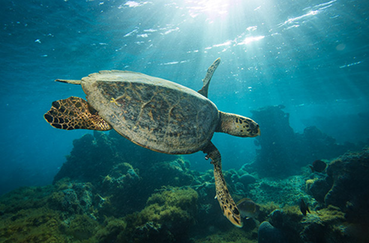

Projeto Integrador
As tartarugas marinhas estão ameaçadas de extinção principalmente por causa da ação humana. A poluição dos oceanos, com plásticos, garrafas PET e outros resíduos, pode causar asfixia e outros danos aos animais. Já o derramamento de petróleo provoca contaminação, prejudicando a saúde das tartarugas e seus habitats. Além disso, a caça e a pesca ilegais, assim como a captura acidental em redes de pesca, também ameaçam essas espécies.
No Brasil, existem cinco espécies de tartarugas marinhas, e quatro delas estão em risco, pois desovam em áreas litorâneas com forte presença humana, o que dificulta sua reprodução. As espécies que desovam em locais mais protegidos enfrentam menos riscos.
Outras ameaças são a destruição dos locais de desova, a ingestão de lixo, a poluição luminosa e as mudanças climáticas, que afetam a reprodução e migração das tartarugas. Poucas conseguem chegar à idade adulta, dificultando a continuidade da espécie. Projetos de conservação, como o Tamar, são essenciais para proteger esses animais e seus ambientes naturais.